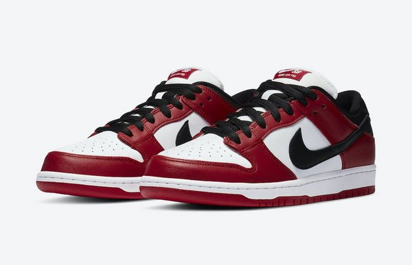

Teslic ShoesTeslic, Inc. is a Portuguese shoe company founded in 2021 by Darwin Balwick. |
 |
More sustainable. More fun.
Introducing the new Teslic Roadster collection
Since 2021, the Roadster has remained more or less the same.
But now, they need to change. Not the look or the comfort - but the way they are made.
The time has come for classic shoes to become more sustainable.
And truly timeless. Without compromising the characteristic design, we reinvented the Roadster with a recycled PRIMEGREEN top.
A new standard of sustainability in a classic silhouette.